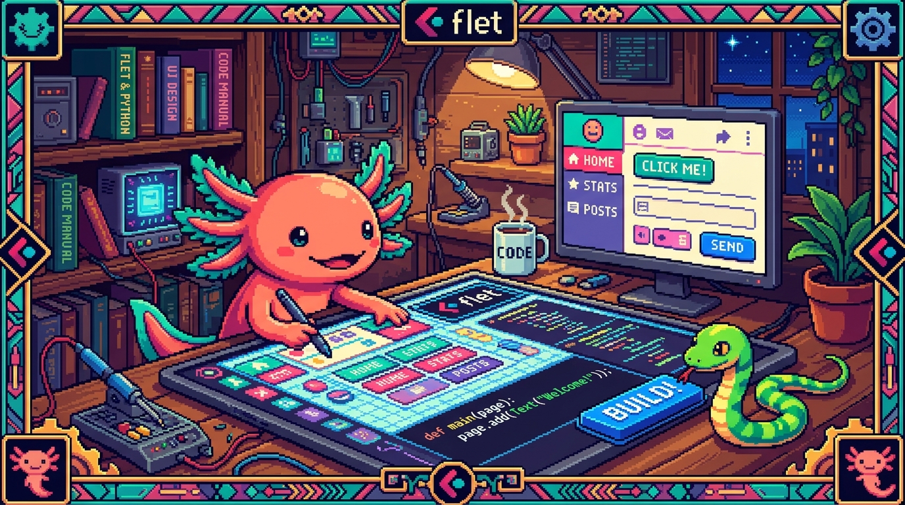

Capítulo 05 — Apps con Flet

A estas alturas ya manejas Python: variables, decisiones, bucles, funciones, listas, diccionarios y archivos JSON. Para cerrar el módulo vamos a ver cómo todo eso termina convirtiéndose en una app con interfaz usando Flet, el framework con el que está hecho PolyPaw. La meta de hoy no es que domines Flet, sino que entiendas cómo está armada tu app y seas capaz de leer su código sin perderte.
1. Qué es un framework y qué es Flet
🟦 ¿Qué significa? — Framework (marco de trabajo)
Un framework es un conjunto de herramientas y reglas ya construidas que te dan la estructura para crear cierto tipo de programa, de modo que no tengas que empezar de cero. Si una librería es "una caja de herramientas", un framework es "el taller completo, con sus reglas de cómo trabajar dentro de él".
🟦 ¿Qué significa? — Flet
Flet es un framework de Python para crear interfaces gráficas —apps con botones, textos, imágenes— que funcionan en móvil, web y escritorio con el mismo código. Su gran ventaja es que escribes solo Python, sin tocar HTML, CSS ni JavaScript: Flet se encarga de dibujar la interfaz por ti. ¿Dónde se usa en tu proyecto? PolyPaw está construido completamente con Flet. Por eso es Python de principio a fin.
2. La idea central: la interfaz son objetos
🟦 ¿Qué significa? — Controles (controls)
En Flet, cada elemento de la pantalla es un control: un objeto de Python que representa un botón, un texto, una imagen, una fila o una columna. La interfaz la construyes creando esos objetos y agregándolos a la página. ```python import flet as ft
texto = ft.Text("¡Hola desde Flet!") boton = ft.ElevatedButton("Púlsame")
``ft.Text(...)crea un control de texto yft.ElevatedButton(...)` crea un botón. Cada uno es un objeto con propiedades que puedes configurar: color, tamaño, etc.🟦 ¿Qué significa? — Contenedores de layout:
RowyColumnPara organizar controles, Flet usa
ft.Row(en fila, horizontal) yft.Column(en columna, vertical). ¿Te suena? Es la misma idea de Flexbox en CSS (Módulo 02), solo que aquí en Python:python ft.Column([ ft.Text("Título"), ft.Text("Subtítulo"), ft.ElevatedButton("Aceptar"), ])Eso apila los tres controles uno debajo del otro. Fíjate cómo los conceptos de diseño se repiten entre tecnologías: lo que aprendiste para una te sirve para las demás.
3. La estructura mínima de una app Flet
import flet as ft
def main(page: ft.Page):
page.title = "Mi primera app"
saludo = ft.Text("¡Hola, Edwar!", size=24)
page.add(saludo) # agrega el control a la página
ft.app(target=main) # arranca la app, usando la función main
🔎 Línea por línea
import flet as ft→ trae Flet y lo llamaft, un alias corto muy habitual.def main(page):→ una función que recibe la página y construye la interfaz dentro.page.add(...)→ añade controles a la pantalla.ft.app(target=main)→ enciende la app y le dice "usamainpara construir la interfaz". ¿Dónde se usa en tu proyecto? Elmain.pyde PolyPaw tiene exactamente esta forma: una funciónmain(page)que arma todo, y unft.app(...)al final que la pone en marcha.
4. Hacer la app interactiva: eventos
Así como en JavaScript reaccionabas a los clics, en Flet los controles también tienen eventos.
🟦 ¿Qué significa? — El evento
on_clickUn botón puede ejecutar una función cuando lo pulsas, a través de
on_click: ```python import flet as ftdef main(page: ft.Page): contador = ft.Text("0", size=40)
def sumar(e): # función que reacciona al clic valor = int(contador.value) + 1 contador.value = str(valor) page.update() # redibuja la pantalla con el cambio boton = ft.ElevatedButton("Sumar", on_click=sumar) page.add(contador, boton)ft.app(target=main)
`` La funciónsumar` es un callback, igual que en JavaScript: se ejecuta justo cuando ocurre el clic.🟦 ¿Qué significa? —
page.update()Cambiar
contador.valueen Python no actualiza la pantalla por sí solo; tienes que pedirle a Flet que redibuje conpage.update(). Es como cuando en el DOM cambiabastextContent: hace falta un paso explícito para que el cambio se vea. Olvidarlo es uno de los errores más comunes: el dato cambia, pero en pantalla "no pasa nada".
5. Cómo está organizado PolyPaw (lectura guiada)
Con todo lo que llevas aprendido, ya puedes leer el mapa de tu app:
| Archivo (en PolyPaw) | Qué hace | Conceptos que ya conoces |
|---|---|---|
main.py |
Arranca la app y enruta entre pantallas | def main(page), ft.app, decisiones |
dashboard.py, leccion.py, tienda.py |
Cada pantalla (vista) de la app | controles Row/Column/Text/botones |
database_manager.py |
Carga/guarda el perfil | archivos + json.load/json.dump |
curriculum_loader.py |
Carga las misiones | json.load sobre missions/*.json |
i18n_manager.py |
Textos en varios idiomas | diccionarios (clave: texto) |
missions/*.json |
El contenido de las lecciones | listas de diccionarios |
polypaw_db.json |
Los datos del usuario | un diccionario persistido |
💡 Tip — Cómo "leer" un proyecto que no escribiste
Ahora que conoces las piezas, abrir PolyPaw deja de dar miedo. Una buena estrategia para entender cualquier proyecto: empieza por
main.py, que es el punto de entrada; sigue losimportpara ver qué archivos usa; busca las funciones por su nombre (cargar,guardar,mostrar); y no pretendas entenderlo todo de un tirón, mejor sigue un solo flujo, por ejemplo "qué pasa cuando completo una misión". Saber leer código ajeno es una habilidad tan valiosa como saber escribirlo.
✅ Checklist — ¿ya domino esto?
- [ ] Sé qué es un framework y qué es Flet (apps multiplataforma en Python).
- [ ] Entiendo que la interfaz son controles (objetos:
Text, botones…). - [ ] Uso
Row/Columnpara organizar (como Flexbox) ypage.add(...). - [ ] Reconozco la estructura mínima:
def main(page)+ft.app(target=main). - [ ] Sé que la interactividad usa eventos (
on_click) y requierepage.update(). - [ ] Puedo ubicar las piezas de PolyPaw y sé una estrategia para leer código ajeno.
🧪 Ejercicios
- Framework vs. librería. Explica con tus palabras la diferencia, con la analogía de la caja de herramientas y el taller.
- Row o Column. ¿Cuál usarías para una barra de botones horizontal? ¿Y para un formulario apilado verticalmente?
- El paso que falta. En el ejemplo del contador, si quitas
page.update(), ¿qué pasa al pulsar el botón y por qué? - Mapa mental. Sin abrir el código, ¿qué archivo de PolyPaw crees que se encarga de guardar tu racha, y con qué funciones de Python (de los capítulos anteriores) lo haría?
- 💻 Tu primera app Flet. Cuando tengas Python, instala Flet (
pip install flet) y crea el contador del ejemplo de la sección 4. Ejecútalo y púlsalo. Luego añade un segundo botón que reste. (¡Acabas de hacer una app con interfaz!)
🎉 ¡Terminaste el Módulo 04 — Python! Ya conoces un segundo lenguaje completo y entiendes cómo está construida PolyPaw por dentro: su Python, sus datos en JSON y su interfaz con Flet. Con dos lenguajes a tu favor, ya piensas como programador, no como copista.
➡️ Siguiente módulo: 05 — TypeScript (en preparación).